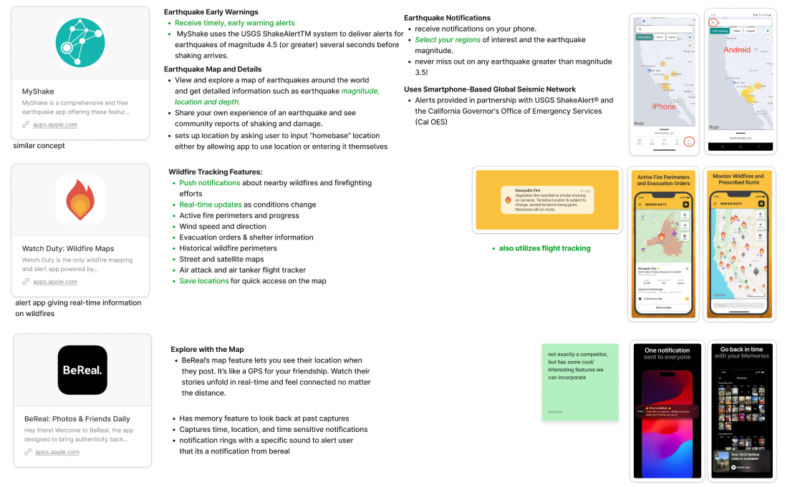
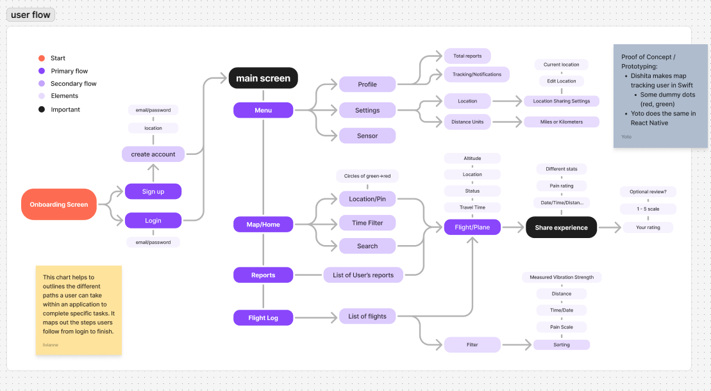
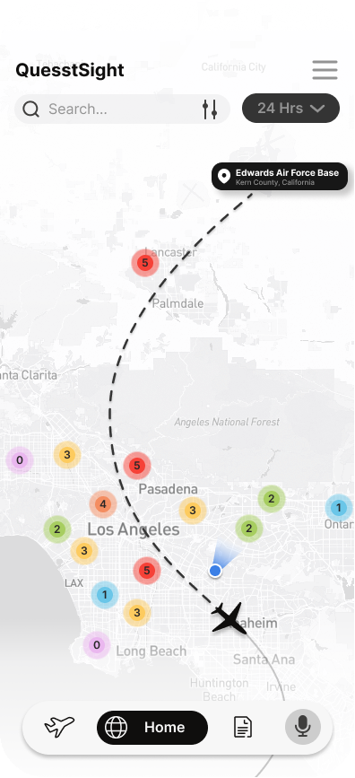
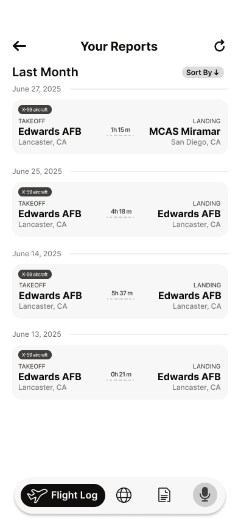
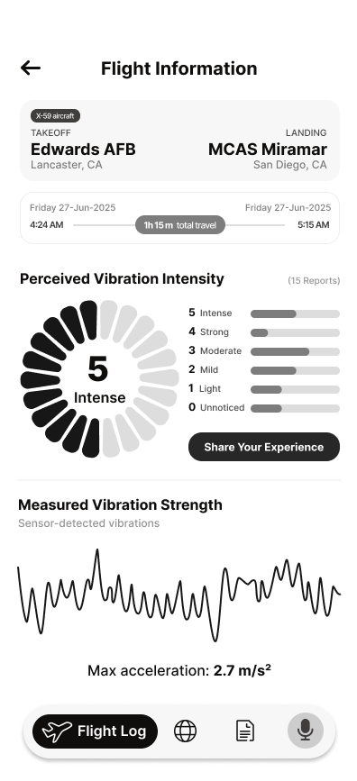
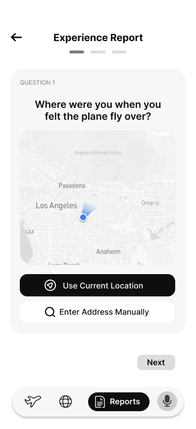
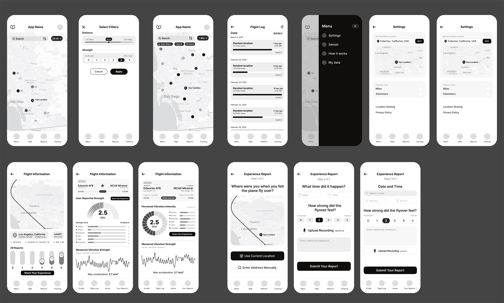
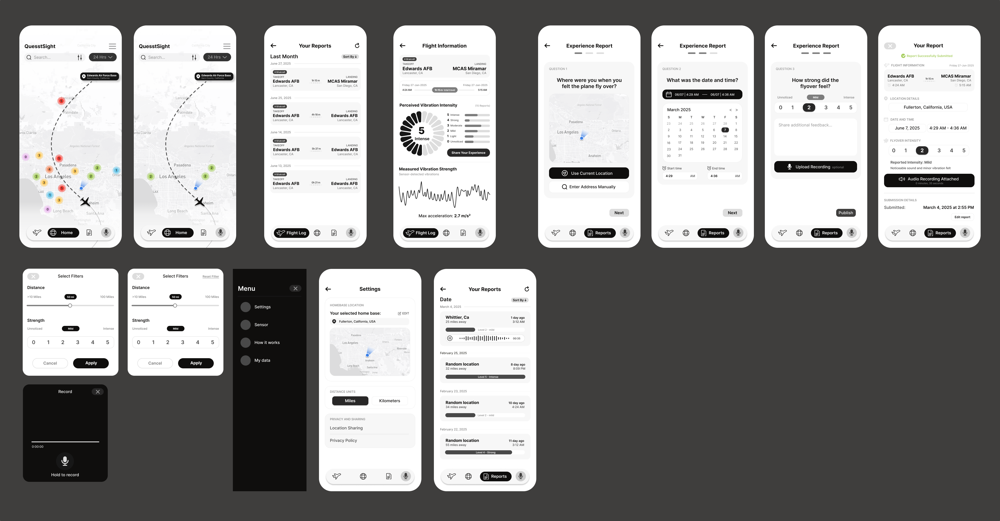

Overview
Bringing the X-59 Mission Closer to the Ground
During my internship, I collaborated with two software engineers, an aerospace engineer, and the NASA CaSGC director on a smartphone app concept for NASA's QUESST mission. The X-59 is designed to make supersonic flight quieter and our goal was to create a way for communities along its flight path to share how they experienced each flyover.
As design lead, I shaped the app's core experience from defining user flows and researching existing products to developing wireframes and exploring key features. I worked closely with the engineering team to understand technical possibilities and translate them into an experience that would be useful and accessible to the public.
- Role
- Design Lead
- Focus
- Mobile app concept for community response
- Output
- Competitive analysis, user flow, and two rounds of wireframes
- Note
- Conceptual design developed for the NASA QUESST
The Challenge
Build a community response app
The challenge was to design a community response app that makes it easier for people to share their experiences as the X-59 flies overhead. We wanted to minimize the effort required to participate, creating an experience that could connect residents to nearby flyovers without relying on them to constantly track the aircraft flying.
This led us to explore ways to make participation more seamless - from detecting and notifying residents of an incoming flyover to providing a simple way to report what they heard and felt. The goal was to capture community feedback while keeping the experience as straightforward as possible.
Hands-off
Make participation simple and require as little manual input as possible
Detect and alert
Help residents recognize when an aircraft is nearby
Log the response
Give people a quick way to share how each flyover sounded and felt
Research
Learning from existing experiences
I began by looking at apps that help people stay informed about events happening around them. I explored MyShake for its earthquake alerts, Watch Duty for its real-time wildfire updates, and BeReal for its use of location-based maps and timely notifications. Each offered a different perspective on how to communicate nearby activity, deliver relevant alerts, and encourage people to respond while an experience was still fresh.

Competitive review of MyShake, Watch Duty, and BeReal
Design
Designing around the flight journey
From there, I mapped a flow from onboarding and location setup to the map, flight details, and an experience report. It organized the product around a clear sequence: find a flight, understand its context, and report what you experienced.

User flow from account setup to flight details, reports, and settings
Mapping Out the Core Experience

01Map and location
View aircraft activity in relation to a person's location with controls for exploring a selected flight

02Flight log
Browse past flights and use filters to narrow the list instead of showing every data point at once

03Flight details
Inspect route, altitude, distance, and travel time for an individual flight

04Experience report
Record where and when a sound was heard, rate its perceived strength, and optionally add context
First Wireframes
My first pass explored the core screens: a map with a time filter, filtering by distance and strength, a flight log, the two-step experience report, and flight information with two ways to show how strong a flight felt.

Second Iteration
In the second round, the map became more focused, allowing users to follow an individual flight path and see community reports along the route through color-coded markers.
I also reworked the reporting flow into three simple steps: identifying where the user was, when the flyover happened, and how strongly they experienced it. To capture more than a numerical rating, I explored the option of attaching a short audio recording to each report.

Outcome
One flow for data and experience
The concept brings flight information and community feedback into one mobile flow. The map and flight log help people explore aircraft activity and the report flow gives them a structured way to connect what they heard to a time and place.
- 01
See nearby activity
A location-aware map gives people a starting point
- 02
Focus on one flight
Selecting a flight keeps its details in focus, not buried in a crowded map
- 03
Share an experience
A guided report captures time, location, and perceived intensity
Reflection
What I Took Away From This Project
Although we didn't get to take this project as far as we initially envisioned, it was still a valuable learning experience. Working alongside engineers, program director, and learning about the challenges of the X-59 mission pushed me outside my usual design perspective. I gained a better understanding of how to approach unfamiliar subject matter, translate technical information into something more approachable, and collaborate across different areas of expertise.
More importantly, it reminded me that not every project is defined by its final outcome. Sometimes, the most meaningful growth comes from the questions you learn to ask and the challenges you learn to navigate as the project grows.